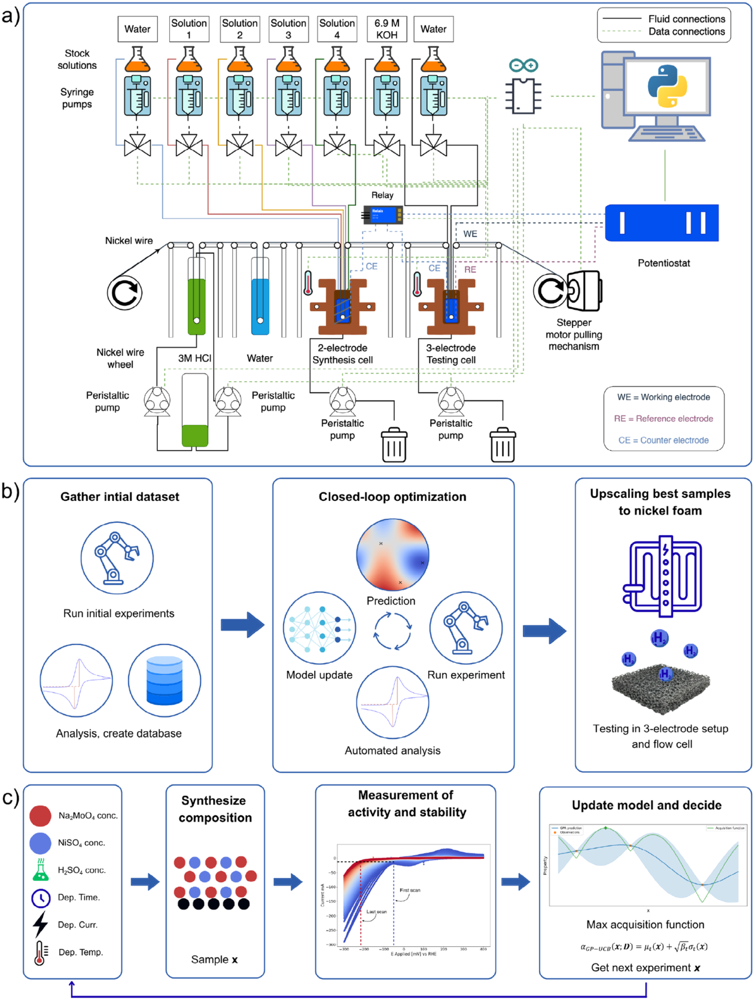
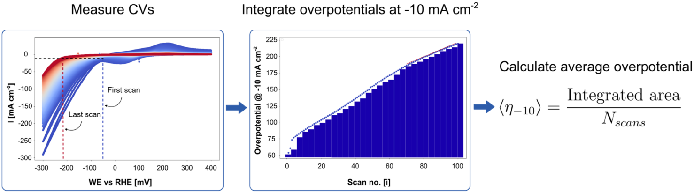
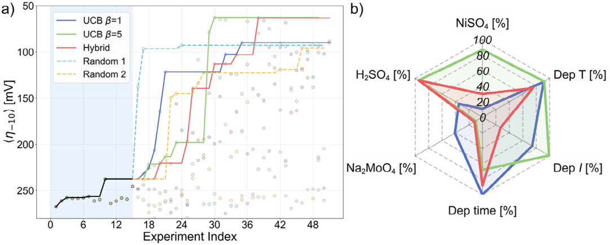
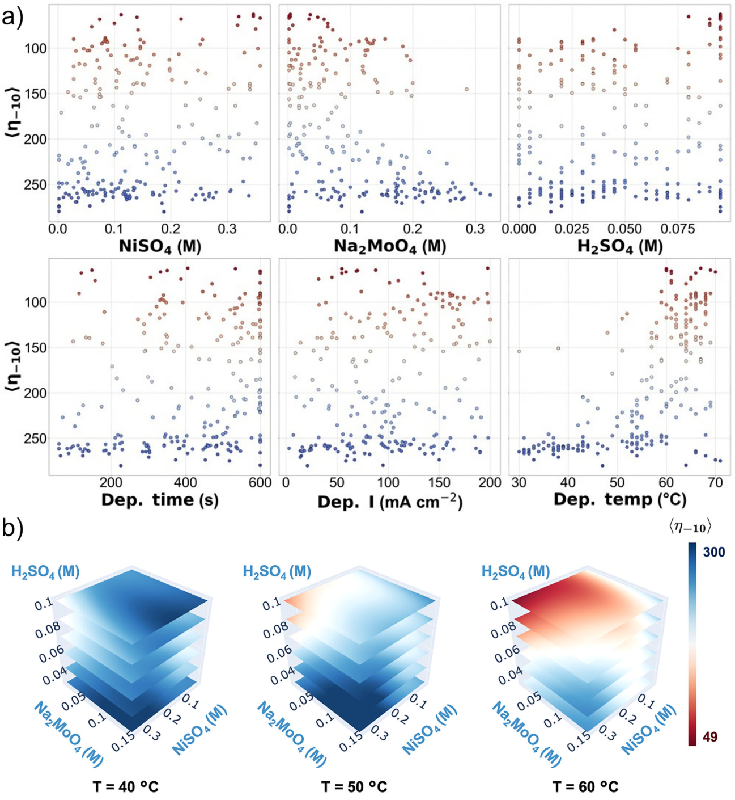
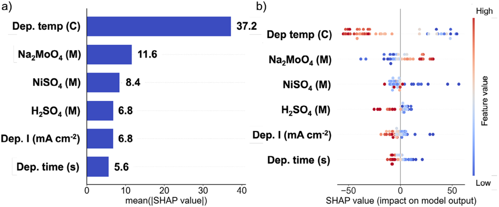
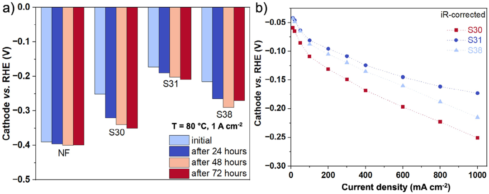
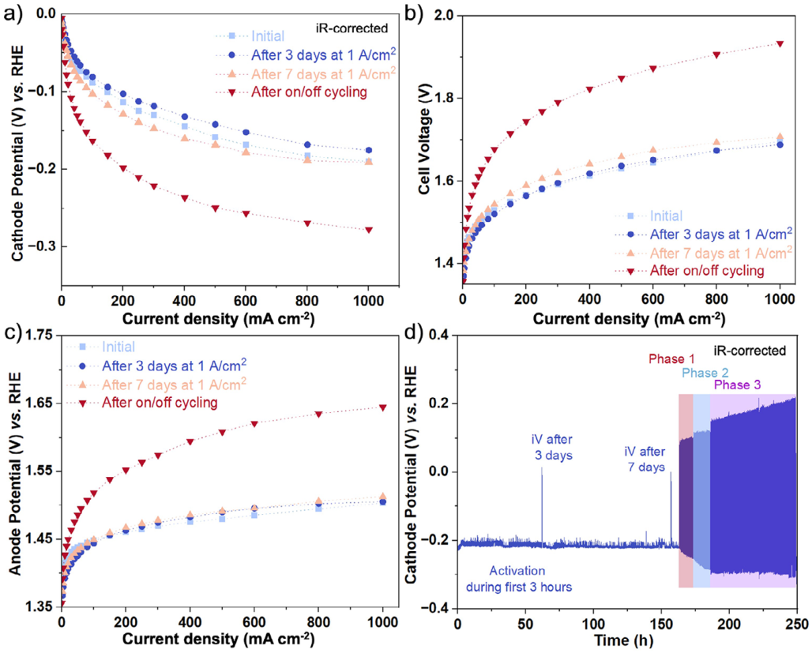

CatBot：怎样把耐久测试接入闭环优化，并把镍钼涂层从镍丝搬到实用电极
论文原文 ↗原文：Paolo Vincenzo Freiesleben de Blasio、Jonas Elsborg、Elif Coşkun 等，Optimizing NiMo Electrocatalyst Coatings for Hydrogen Evolution in Alkaline Electrolysis With The Machine Learning-Guided Autonomous Platform CatBot，Advanced Functional Materials，2026，e78438。论文｜
碱性水电解的阴极需要高效析氢。镍钼涂层不使用铂族金属，具有吸引力，但其性能取决于一整套沉积条件：溶液中镍和钼的比例、酸度、温度、电流及时间会共同改变组成和表面形貌。找到初始活性高的涂层之后，还要回答它在启停过程中能否保持性能，以及同一配方搬到大面积多孔电极上是否仍然有效。
这篇工作把这些问题串成了一条实验路线：在镍丝上自动制备和测试，用包含100次应力循环的指标反馈给贝叶斯优化，再将优选条件转移到泡沫镍并进行高电流测试。 作者重点展示了搜索策略怎样影响发现，以及闭环筛选所得材料如何进入接近工业条件的电极验证。
一、机器人实际改变什么，又怎样做出一个样品
搜索对象是一套沉积配方，而不是一个预先指定的合金原子比例
作者准备两种都含 Ni、Mo 的储备液：一种富钼，含0.4 M钼酸钠、0.04 M硫酸镍和0.4 M柠檬酸钠；另一种富镍，将前两者的浓度对调。两种储备液先调到pH 8.5，再按建议比例与水、硫酸混合，构成电沉积浴。这样能连续改变镍钼来源的相对量、总浓度和酸度。
优化程序的输入有六个变量：富镍液用量、富钼液用量、硫酸添加量、沉积电流密度、沉积时间、沉积温度。电流密度覆盖约−1至−200 mA cm⁻²，时间60—600 s，温度30—70 ℃。程序先在连续范围内提出建议，再按泵和设备能执行的步长取整，并满足沉积容器总体积不超过15 mL的约束。按各变量的可执行步长计算，组合数约为3.5×10¹⁴。
这里，模型提出的是“用什么条件制备”。最终涂层的Ni/Mo组成、形貌和电化学表现由沉积过程形成，再通过测试和表征建立联系。

图1｜a 展示镍丝依次经过清洗、沉积和测试槽；b 将初始实验、闭环优化与泡沫镍放大连接起来；c 展示六个制备变量怎样经实验反馈进入下一轮选择。
用连续镍丝，把每个新配方接到一段新电极上
CatBot通过卷对卷机构输送镍丝。新的一段镍丝依次经过盐酸清洗、水洗、电沉积和电化学测试，测完后收卷，再送入下一段。测试用镍丝的几何面积为0.97 cm²。
每轮开始时，泵按照配方分配沉积液，并准备测试所需的浓碱液；温控达到设定值后，将镍丝送入沉积槽，以指定电流和时间形成NiMo涂层。随后涂层进入独立的三电极测试槽，在80 ℃、30 wt.% KOH中评价。清洗与溶液更换接续在实验之后，使同一条设备链可以执行下一组条件。
这使六维参数中的一个点变成一个实际样品，再变成可供模型学习的测量结果。
二、怎样用一个指标同时关心活性与耐久
只比较第一次扫描的过电位，容易选到初始表现很好、随后迅速衰退的涂层。作者因此让每个样品先经历100次循环伏安扫描：电位在−300至+400 mV（相对可逆氢电极）之间变化，扫描速率为50 mV s⁻¹。这种加速应力测试让催化剂反复经历阴极到阳极的电位变化。
在每次扫描中，提取达到−10 mA cm⁻²时经溶液电阻修正的过电位，再对100次取平均，记为〈η₋₁₀〉。过电位表示驱动反应所需的额外电压；这里按其大小比较，数值越低越好。如果一份涂层初始过电位低，但随循环明显增加，其平均值仍会升高。

图2｜从每次扫描提取−10 mA cm⁻²的过电位，得到随循环变化的曲线，再计算平均过电位。循环中活性保持得越好，这个平均值越低。
因此，这项研究采用的是包含耐久过程的单一综合目标。活性和衰减都通过100次测试的平均电压代价进入下一轮决策。
三、模型怎样决定下一次沉积条件
作者先用最大值熵搜索（MES）生成15个初始数据点，供后续三个优化任务共同使用。MES是一种信息导向的选择规则：优先做有助于了解最优结果的实验。每个数据点包含六个制备参数及实测〈η₋₁₀〉。
随后，用高斯过程学习“制备条件→平均过电位”的映射。高斯过程是一种同时提供预测均值与预测不确定性的回归模型，适合这里几十个样品、六维输入的情形。每完成一个实验，程序将新数据加入已有样本，重新拟合模型，再挑选下一组条件。
下一点的选择由采集函数完成。作者主要使用置信界策略（UCB），综合考虑预测表现和不确定性；参数β越大，越愿意去尚未充分了解的区域。研究比较了三条路线：β=1、较偏向利用当前预测；β=5、增加探索；以及UCB与MES交替、持续引入信息导向探索。被选中的条件经设备约束处理后交给CatBot，测得的平均过电位再返回模型，完成循环。
四、主要结果：充分探索找到了不同的高性能制备区域
1. 增强探索，把平均过电位从约90 mV降至63 mV

图3｜a 比较各策略获得的最佳平均过电位及逐次实验结果，阴影为共同起始数据；b 比较三条优化路线找到的优选制备条件。
β=1的任务较早集中到狭窄区域，偏好较长沉积时间、较高沉积电流和63—66 ℃的温度，得到的优选涂层平均过电位约89—95 mV。将β提高到5后，搜索接触了不同的溶液组成和沉积条件，最佳值降至63 mV，相对第一条路线的优选样品降低约30%。
交替使用UCB和MES的混合策略也在后续35次实验左右找到63 mV的涂层，但所处制备区域不同：它使用明显较低的硫酸镍浓度，仍能获得很好的表现。两种探索策略得到的是不同的好配方，而非仅重复收敛到同一个点。
两次各35次实验的随机搜索中，一次早期找到约93 mV的样品后停滞；另一次到第29次才找到相近表现。大量随机样品的平均过电位仍在200—290 mV范围。这里模型反馈的作用，是逐步把实验资源集中到有希望的区域；增强探索则帮助它继续发现早期预测没有覆盖到的方向。
2. 高温与溶液配比共同决定高性能区

图4｜a 将实测平均过电位分别与六个变量比较；b 固定沉积电流和时间后，在不同温度下观察溶液组成的预测性能分布。红色区域对应较低平均过电位。
多个优化任务找到的好涂层集中在60—70 ℃，钼酸钠浓度约0.04—0.07 M，硫酸镍浓度高于钼酸钠，沉积浴pH约6.5—7.5。沉积电流和时间则可以在较宽范围内变化。这说明好表现依赖变量之间的组合，尤其是温度与镍、钼来源的相对关系。

图5｜a 按平均绝对SHAP值排列变量，b 展示每次实验中各变量对预测值的贡献；负值使预测平均过电位降低，颜色表示变量取值大小。
为解释实验数据，作者另用XGBoost树模型拟合性能，并计算SHAP值。SHAP将一次预测相对基准值的变化分配到各输入变量，帮助看清模型捕捉到的关联。沉积温度的平均绝对贡献为37.2 mV，显著高于其他变量；高温样品通常对应较低的预测过电位。
材料表征把这些趋势接到了实际涂层：优选样品表面更粗糙、细小球状团簇更多、电化学活性面积更大，且通常具有更高的Mo引入量。作者观察到，硫酸添加与Mo引入关系较强，高温则主要与表面粗糙化相关。由此，搜索结果不仅指出某个参数组合好，还提供了理解“这种制备方式为什么有利”的材料线索。
五、优选配方搬到泡沫镍后，得到了什么
从镍丝筛选到高电流多孔电极
作者从优选结果中选择S30、S31、S38三组配方进行放大，同时考虑较低沉积电流密度的制备条件。泡沫镍先压缩、清洗，再按表面粗糙度因素换算沉积电流，将镍丝上的条件转移到多孔基底。
S31的一组具体配方是：硫酸镍0.320 M、钼酸钠0.036 M、硫酸0.080 M，60 ℃下以约−70 mA cm⁻²沉积351 s。它在镍丝筛选中的平均过电位约65 mV，随后在泡沫镍上表现出三种候选中最佳的高电流活性。

图6｜a 比较各电极在1 A cm⁻²下随运行时间变化的阴极电位，b 为初始极化曲线；S31具有较低的析氢过电位。
在80 ℃、30 wt.% KOH的零间隙三电极烧杯装置中，S31达到 −1 A cm⁻²只需173 mV过电位。这里零间隙表示电极紧邻隔膜的装配方式，三电极设计则能单独测量阴极电位。作者据此进一步将S31制成有效面积10 cm²的电极，装入零间隙流动池，与NiFe/泡沫镍阳极配对。
连续运行与启停运行呈现不同的材料演化

图7｜a、b、c 分别比较阴极、全电池和阳极曲线；d 为完整测试过程中的阴极电位。先进行一周恒电流运行，再进入三个不同停机时间的循环阶段。
流动池中，S31在−1 A cm⁻²的初始过电位约190 mV，前三天活化后降至175 mV；随后继续运行，到一周时接近初始状态。裸泡沫镍在相同高温浓碱条件下达到这一电流所需过电位约382 mV，显示NiMo涂层带来了明显改善。
启停测试随后改变运行方式：每次以1 A cm⁻²析氢2 min，再施加0.2 mA cm⁻²的反向电流，分别持续30、60、120 s。前两个阶段各250次循环，阴极分别增加约32和40 mV的电压损失；第三阶段延长至950次循环后，性能趋于稳定。
作者用电解液元素分析和运行后的显微表征追踪这一变化：连续运行一周后电解液中Mo为4.2 ppm，动态运行后升至15.3 ppm；涂层出现开裂与局部脱层，Mo含量由3.9 at.%降至1.9 at.%。这些结果解释了启停过程中活性为何下降，也让闭环筛选、放大制备和真实运行状态形成了连续的材料故事。
六、这项工作对AI材料发现的贡献
CatBot展示了一种围绕实验目标组织AI的方法：先把沉积配方转换成设备能执行的六维输入，再把完整应力测试压缩成每轮可学习的指标，通过模型更新持续改变实验选择，最后把筛选结果迁移到多孔电极并评价高电流运行。
其中最值得借鉴的是两个连接。第一，耐久表现直接参与每轮选择，优化的是经历应力后的整体表现。第二，搜索策略的探索程度会改变最终找到的制备区域，实验预算很小时尤其明显。后续泡沫镍和流动池测试则进一步连接了制备条件、材料形貌与实际电极运行，使自动化材料发现有了一条从快速筛选走向应用验证的具体路线。
原始摘要完整中文翻译
发现高效、耐久且不含铂族金属的碱性水电解电催化剂，对于降低绿色氢气成本至关重要。然而，人工实验进展缓慢，仍然妨碍着对巨大合成空间的高效探索。在这里，我们提出一种闭环优化方法，将自动化电催化剂合成与测试系统CatBot、贝叶斯优化以及工业条件下的加速应力测试相结合，以快速发现兼具活性和耐久性的NiMo涂层。在有限实验预算内，我们以镍丝为基底，采用不同搜索策略高效探索超过10¹⁴种可能组合的六维合成空间，识别出具有优异活性与稳定性的不同区域。最有希望的涂层随后被放大制备到实用泡沫镍电极上，在80 ℃、30 wt.% KOH中进行析氢反应时，达到−1 A cm⁻²所需的过电位为173 mV，表现出铂水平的催化活性。这项工作为在真实运行条件下自主优化功能电催化涂层确立了一种可推广策略。